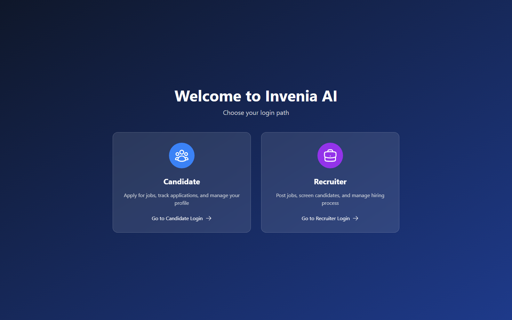
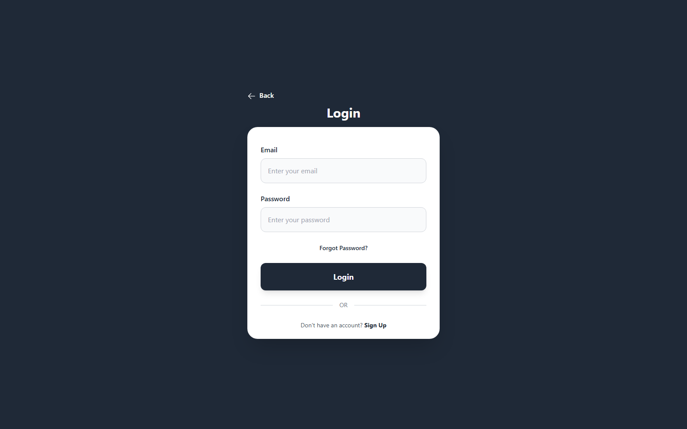
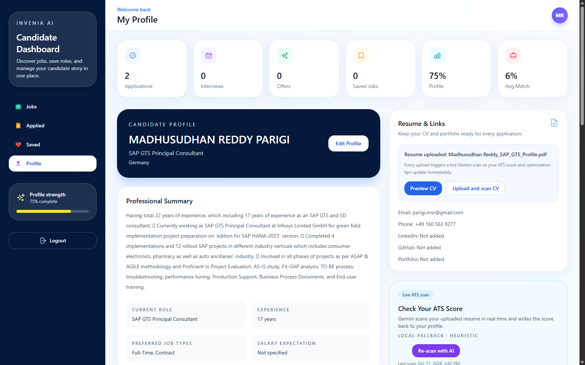
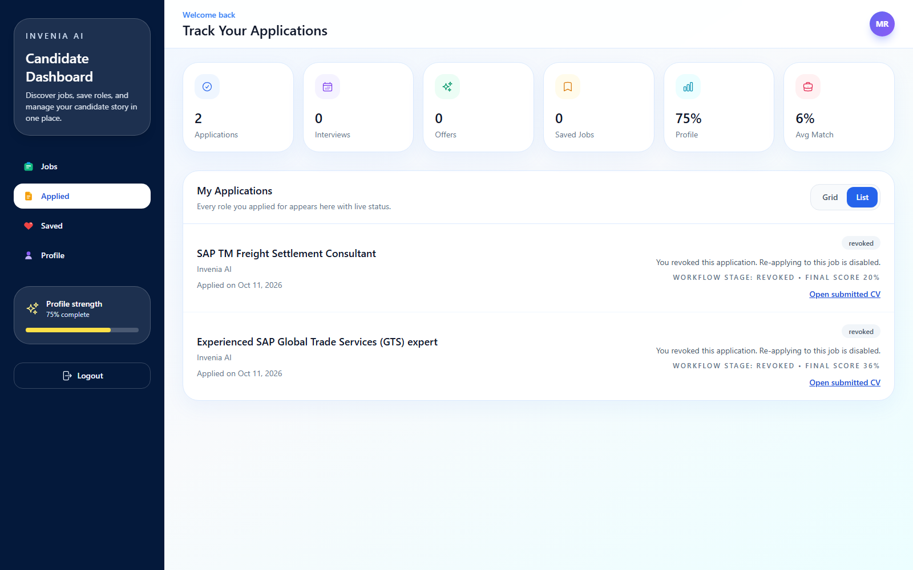

Stages
6
Role selector to completed report.
This guide follows the candidate journey exactly as it exists in the current build. It starts at the role selector, moves through sign in, profile creation, resume upload, ATS scan, job application, and ends with the interview summary.
Quick start
Use this path when onboarding a new candidate or training support staff.
Open the app, pick the Candidate card, and move to the login page.
Add personal details, skills, links, and a professional summary.
The ATS scan updates automatically and writes a score back to the profile.
Optional screening rounds can be skipped, but the AI interview is compulsory.
Step 1
The first screen asks the user to choose the correct portal.
Navigate to the live URL, wait for the splash screen, and select the Candidate card. This keeps the login path separate from the Recruiter portal and avoids confusion later in the journey.

Step 2
The login page keeps email and password only, so onboarding stays quick.

New users can sign up from this page. Existing users should enter the email and password they used during registration. After login, the system stores the token and opens the candidate dashboard.
Step 3
The dashboard refreshes profile completion and ATS information after upload.
Add your name, current title, location, experience, skills, job preferences, and links. The profile view also shows the resume upload button and the live ATS scan area.

ATS snapshot
Resume structure and keyword matching affect the current score.
The live scan highlights strengths, missing keywords, and suggestions for improving the candidate profile.
The score updates immediately after a resume upload or after the user presses the scan button. That means the candidate can improve the resume before starting the job application flow.
Step 4
Each job card can be opened, saved, and applied from the jobs grid.

The workflow preview shows which stages are required and which are optional. In the current build, aptitude, technical, and coding can be made optional by the recruiter, while the AI interview remains compulsory.
Step 5
The report is generated after the third answer is submitted.
Once the AI interview is finished, the backend calculates the final score and generates a report with strengths, gaps, recommendations, and a hiring decision summary.

Candidate checklist
Use this if you are helping candidates over the phone or in support chat.